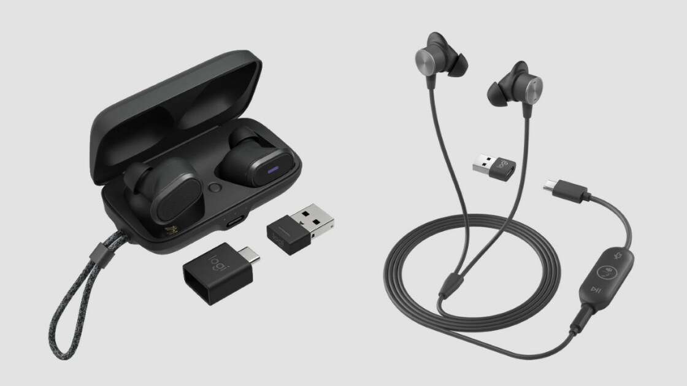
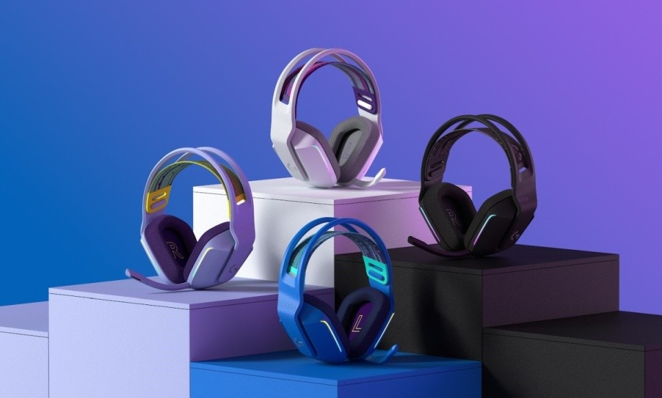
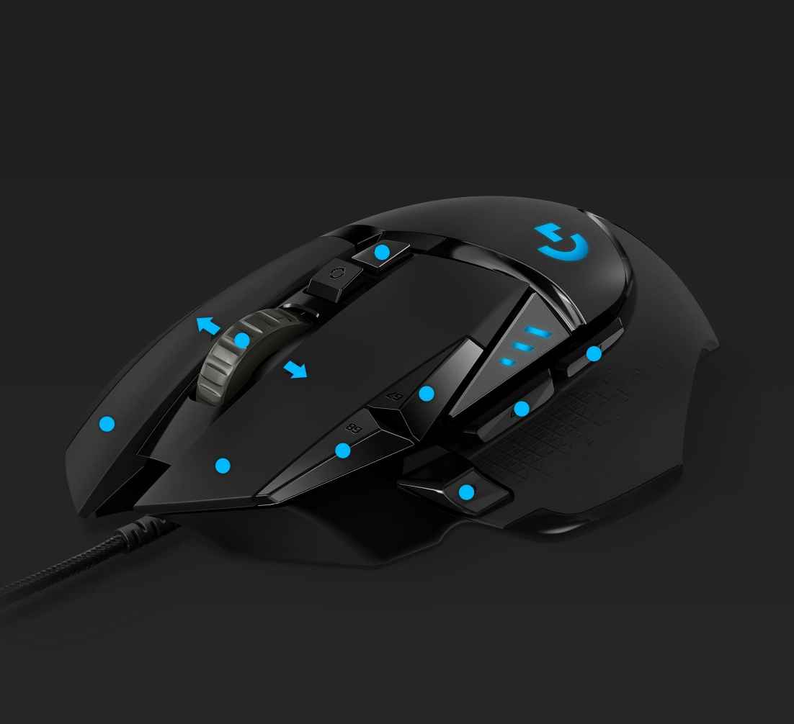
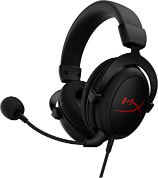

LOGITECH ZONE WIRED EARBUDS
Diseñado para empresas con micrófono con cancelación de ruido incorporado y múltiples conexiones.

Logitech G733
Logitech G733 Lightspeed - Auriculares inalámbricos para juegos, con diadema de suspensión, LIGHTSYNC RGB, tecnología de micrófono Blue VO!CE.

Logitech G502
Botones personalizables y memoria integrada: 11 comandos personalizado, Sensor de 16 K: el sensor de alto rendimiento más preciso de Logitech

HyperX QuadCast
El HyperX QuadCast™ es el micrófono independiente todo incluido ideal para el aspirante a streamer o podcaster que busca un micrófono de condensador con sonido de calidad.

HyperX Cloud Core - Cable
Los auriculares para juegos HyperX Cloud se caracterizan por su diseño ultracómodo y su increíble calidad de sonido.

Razer Kraken X
Equipado con software de sonido envolvente 7.1 para que pueda experimentar un audio posicional preciso cuando juega. podrá captar la dirección de donde proviene la acción para que esté listo para lanzarse a un tiroteo.

RAZER VIPER MINI
Nacido para superar los límites de los juegos ultraligeros, el Razer Viper Mini adopta una forma más pequeña que sigue siendo igual de grande en rendimiento.